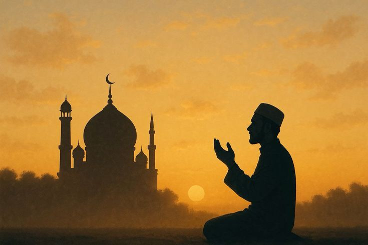

SHOLAT LAH SEBELUM DI SHOLATKAN

MENGENAL SHOLAT
Ibadah utama sebagai bentuk ketaatan kepada Allah SWT
Pengertian Sholat
Sholat adalah ibadah kepada Allah SWT yang terdiri dari perkataan dan perbuatan tertentu, dimulai dengan takbiratul ihram dan diakhiri dengan salam. Sholat merupakan bentuk penghambaan, ketaatan, serta hubungan seorang muslim dengan Allah SWT.
01 Hukum Sholat
Sholat lima waktu hukumnya wajib bagi setiap muslim yang telah memenuhi syarat. Kewajiban sholat merupakan perintah Allah SWT yang harus dilaksanakan setiap hari, yaitu Subuh, Zuhur, Asar, Magrib, dan Isya.
02 Dalil tentang Sholat
وَأَقِيمُوا الصَّلَاةَ وَآتُوا الزَّكَاةَ وَارْكَعُوا مَعَ الرَّاكِعِينَ
Wa aqīmush-shalāta wa ātuz-zakāta warka‘ū ma‘ar-rāki‘īn.
Artinya: Dan laksanakanlah sholat, tunaikanlah zakat, dan rukuklah beserta orang-orang yang rukuk.
(QS. Al-Baqarah: 43)
03 Sholat Lima Waktu
- Subuh: 2 rakaat
- Zuhur: 4 rakaat
- Asar: 4 rakaat
- Magrib: 3 rakaat
- Isya: 4 rakaat
Kelima sholat tersebut wajib dilaksanakan oleh umat Islam sesuai waktunya.
04 Tujuan Sholat
- Mendekatkan diri kepada Allah SWT.
- Menunjukkan ketaatan kepada perintah Allah.
- Mengingat Allah dalam kehidupan sehari-hari.
- Memohon pertolongan dan petunjuk kepada Allah.
- Membentuk pribadi yang disiplin dan bertanggung jawab.
05 Keutamaan Sholat
- Menjadi amalan utama yang akan diperhitungkan.
- Mendekatkan seorang hamba kepada Allah SWT.
- Menghapus dosa-dosa kecil dengan izin Allah.
- Mendatangkan ketenangan dan keberkahan hidup.
- Menjadi cahaya bagi seorang muslim.
06 Jenis-Jenis Sholat
Sholat Fardhu
<Sholat yang wajib dilaksanakan, seperti sholat lima waktu dan sholat Jumat bagi yang memenuhi ketentuannya.
Sholat Sunnah
Sholat yang dianjurkan untuk menambah pahala dan mendekatkan diri kepada Allah, seperti sholat Dhuha, Tahajud, Rawatib, Witir, dan Tahiyatul Masjid.
07 Hikmah Sholat
- Melatih kedisiplinan dalam mengatur waktu.
- Mendidik hati agar selalu mengingat Allah.
- Menumbuhkan kesabaran dan ketenangan.
- Mencegah perbuatan buruk dan kemaksiatan.
- Mempererat persaudaraan melalui sholat berjamaah.
Pesan tentang Sholat
Sholat bukan sekadar kewajiban, tetapi juga kesempatan untuk beristirahat sejenak dari kesibukan dunia dan mengingat Allah SWT. Jagalah sholat, karena sholat adalah salah satu fondasi penting dalam kehidupan seorang muslim.